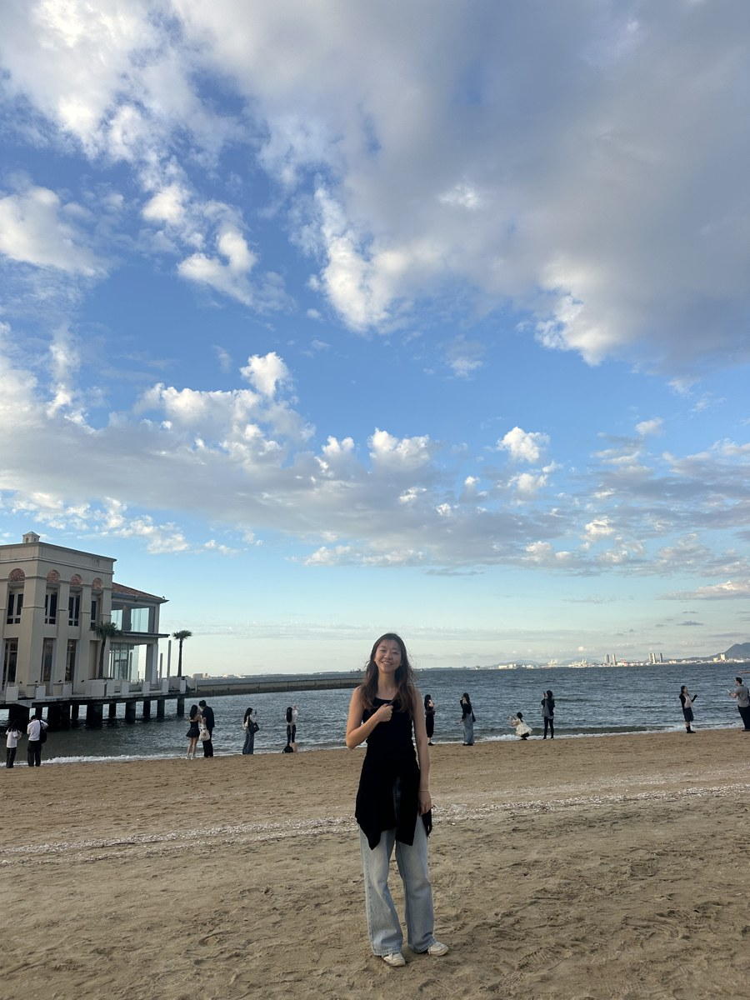
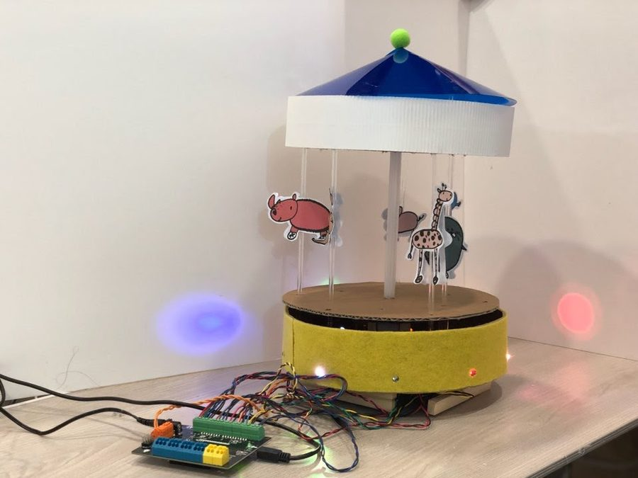
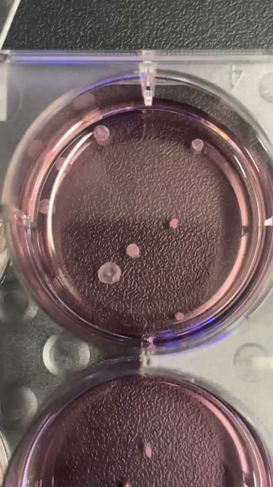
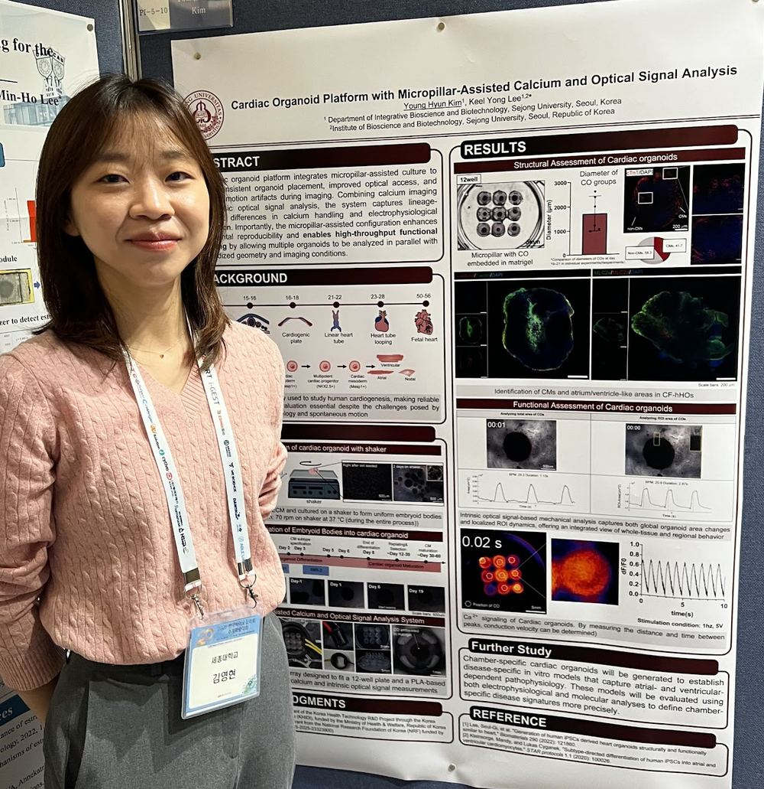

About Me
I'm Young Hyun Kim, a research assistant in the Biological Systems Engineering Laboratory at Sejong University. I completed my M.S. in August 2026 and now work on cardiac organoids, quantitative imaging, and instrumentation.
I'm interested in how engineered cardiac tissues develop physiological function, and how we can connect their calcium dynamics and contraction through better measurements.
Build a system. Measure how it behaves. Ask a better question.

Turning Points
From building robots to engineering living systems.
-
2017–2019 · Robotics & education
Learning by making.
At CreArtBot, I built interactive robots and taught robotics and STEAM workshops. Turning an idea into something that moved taught me to build, test, and explain a system.
Explore the making projects →
Hands-on robotics education · CreArtBot -
2022–2024 · Tissue engineering
From machines to living systems.
I joined a newly forming tissue-engineering group in 2022, working with engineered skeletal muscle and cardiac tissues. During my M.S., I began building hiPSC-derived cardiac organoids and tools to measure their behavior.
See the cardiac models →
Cardiac organoids in culture -
2025–present · Quantitative cardiac research
Building the tissue and the tools.
My master's work brought chamber-specific organoids together with iCAMAnalyzer for calcium and motion analysis. I now extend that work into synchronized imaging and instrumentation to ask how cardiac function emerges.
Explore the analysis platform →
Sharing the work · Korea BioChip Society, 2025
Selected highlight: Grand Prize — 4th College of Life Sciences Academic Competition, Sejong University, 2016.
Ph.D. training
I hope to use engineered cardiac models and quantitative physiology to study the mechanisms that shape normal and disease-associated cardiac function.
Before the Bench
Robotics and teaching shaped how I approach research: make an idea tangible, test what it actually does, and explain it clearly. That habit still guides how I build experimental systems.
Photos, projects & workshop stories →Beyond the Lab
I have taught laboratory courses in biochemistry and microbiology and mentored undergraduates through independent research projects. These experiences keep clear explanations and shared learning central to how I work with others.
My 2019 exchange semester in France was another step into an unfamiliar academic and cultural environment. See the travel story →